The exhibition
For forty-six years Inês Valadares went out before the light did. She photographed the people who work at the edges of the day, the fishermen and bakers, a projectionist, the last couple on the dance floor, always from a few steps back and never asking anyone to turn around. Silver Hour is the first retrospective of her work: eight prints, hung in the half-dark they were made in.
Eight prints, 1981–2021
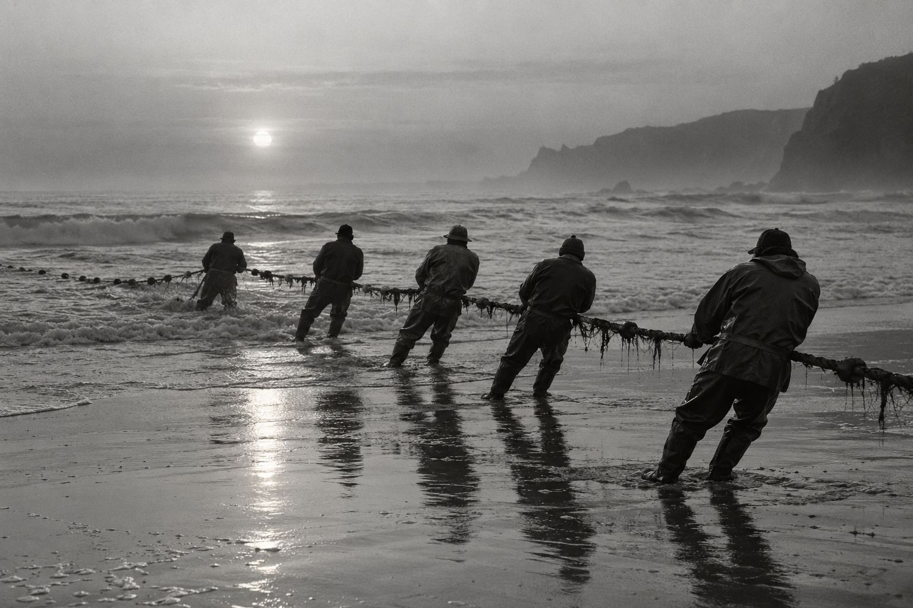
Nets at first light
The crews hauled for an hour before the sun cleared the haze. She stood behind them so as not to be in the way, and kept that place for the next forty years.
Enter the dark room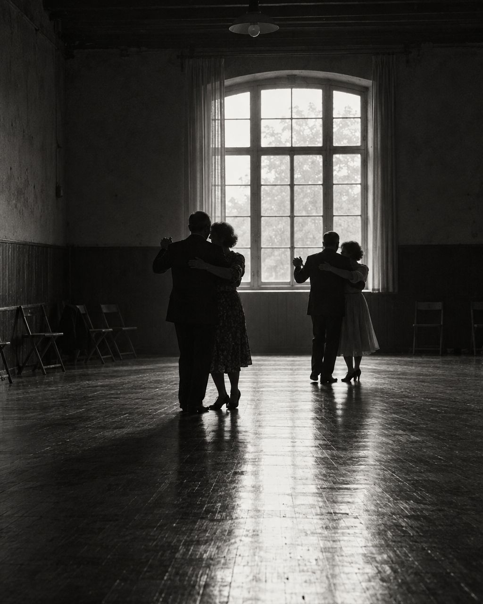
Last waltz, Sunday
A workers’ club on the south bank, where the band played until the last ferry. She came for the light from the west window and never learned to dance.
Enter the dark room
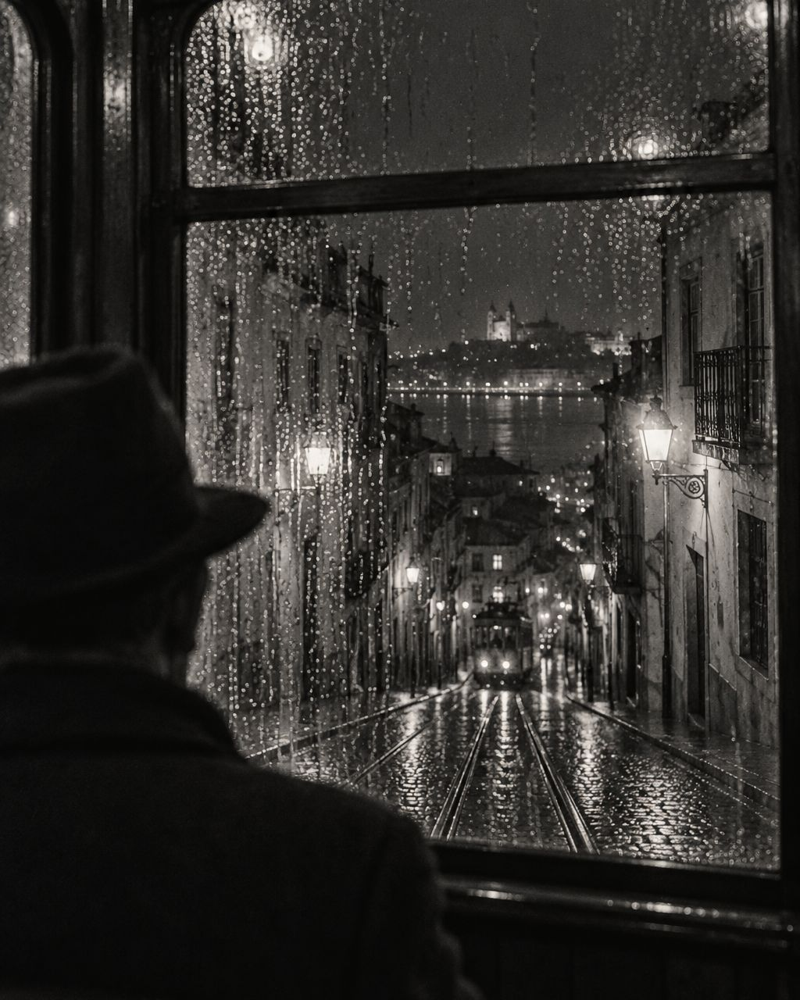
Rain, line 28
Made on the ride home from the newspaper, at the slowest shutter speed she dared to hold by hand. Most of the picture is the window.
Enter the dark room
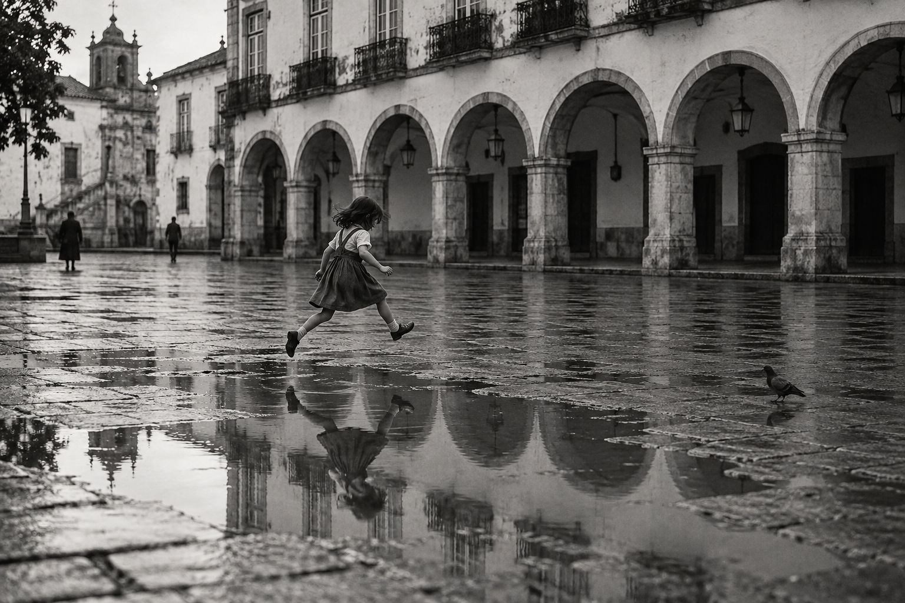
The puddle
One frame and no second chance. The girl’s mother is just outside the picture, calling her name.
Enter the dark room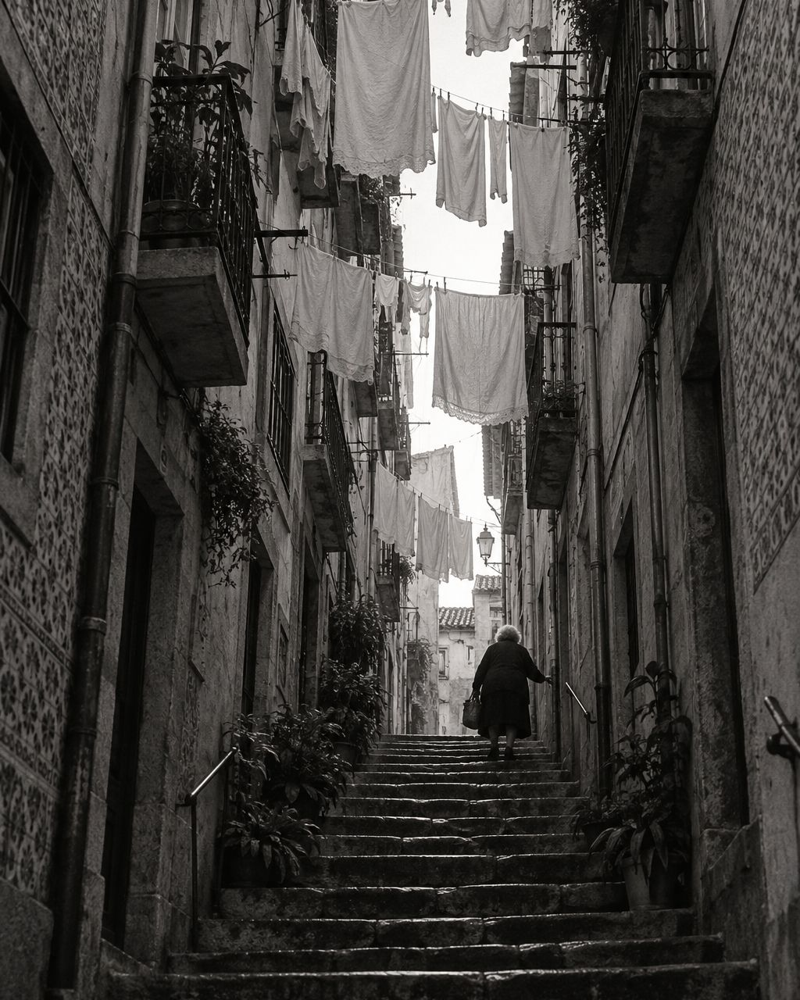
Washing day
The first dry morning after a week of rain, from the bottom of the steps in Miragaia. Every balcony had something to say.
Enter the dark room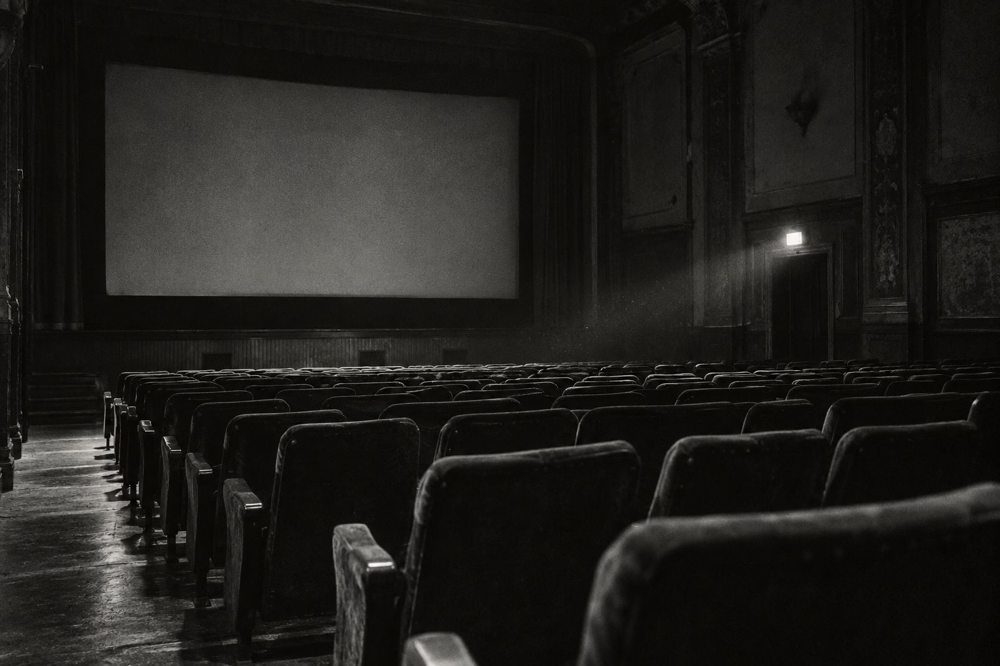
After the last show
The cinema closed that spring. The projectionist let her in for one night and left the exit lamp on so she could find her way out.
Enter the dark room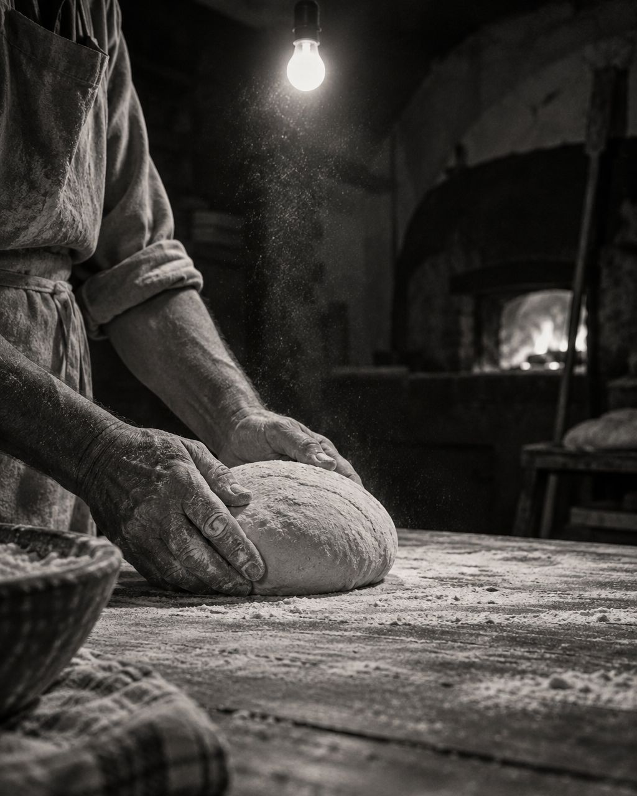
Dough, four in the morning
Her uncle’s bakery. She photographed his hands every winter for a decade; this is the only frame with the flour still in the air.
Enter the dark room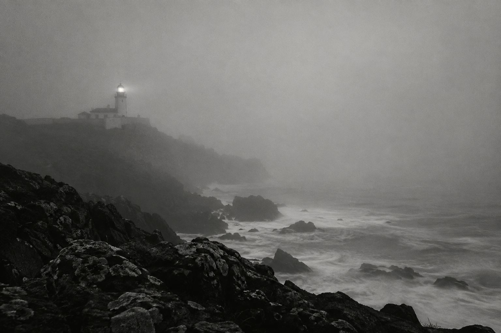
The lamp, in fog
From her last roll of film. She waited three mornings for the fog to lift, then decided the fog was the picture.
Enter the dark roomAll works Eight prints
-
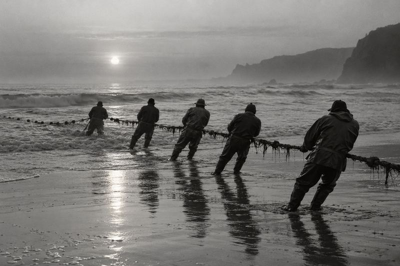
1981 Nets at first light Póvoa de Varzim -
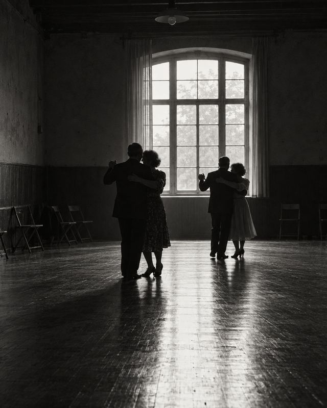
1987 Last waltz, Sunday Barreiro - 1993 Rain, line 28 Lisbon
-
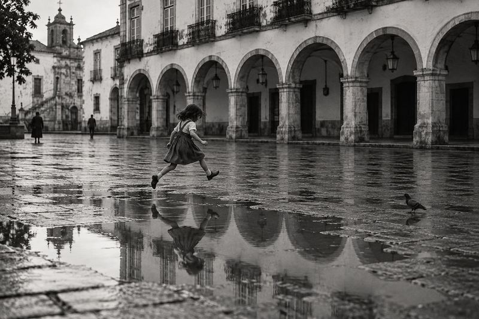
1996 The puddle Évora -
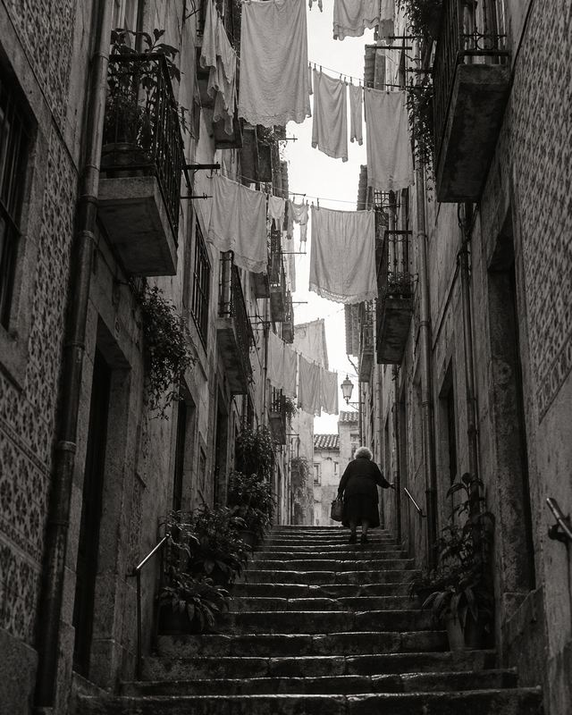
2002 Washing day Porto -
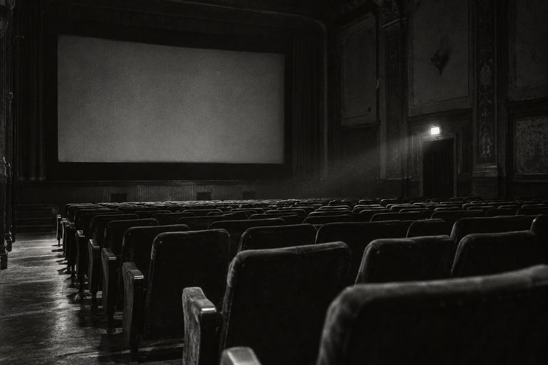
2008 After the last show Coimbra -
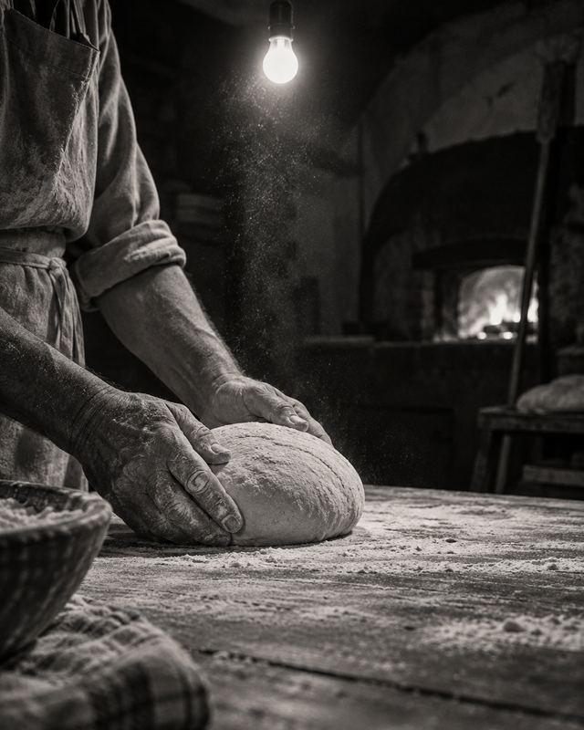
2015 Dough, four in the morning Viseu - 2021 The lamp, in fog Peniche


Select a work to see it in the dark room.
Visit
25 September 2026 to 28 March 2027
- Where
- Meia-Luz, house of photography
Alcântara, Lisbon - When
- Tuesday to Sunday, 11:00 to 19:00
Last Friday of the month until midnight, with the lights kept low - Admission
- €9, reduced €5, under 18s free
Free on Sunday mornings until 14:00
Step-free throughout. Large-print labels and a seat in every room.